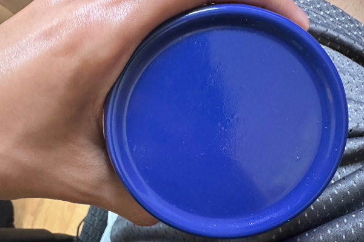

The purpose of this assignment is to give a clear understanding of how digital images actually work so that we can make informed, intentional choices when preparing visuals for the web. Were asked to think about what pixel dimensions represent, why a 3000×5000 image behaves differently from a downscaled one, and how changing an image’s dimensions affects both clarity and storage size. It also introduces common web formats such as JPG, PNG, and GIF, explaining what makes each format useful in different situations. A major goal is to address problems with proportionality for example, stretching a portrait photo into a landscape shape or squishing an image into a square—so students learn to maintain proper aspect ratios and produce images that look clean, accurate, and professional on screen.
Demonstrating Image Manipulation with a Pexels Photo
I selected this image by Natalia Pawlucka because it fulfilled the requirement of the dimensions. The original image is a JPG format with dimensions of 3873x5894 pixels, weighing in at 2.26 MB.
The original unedited photo from Pexels displayed at a contained scale.
Downsizing Images with CSS
The original large image downscaled to 20% of its native width using inline CSS layout constraints.
Proper Reduction of Image with Editor
An image properly resized inside an editor to a web-optimized 600px width, retaining crisp rendering without wasting bandwidth.
Improper image proportions with CSS
Height reduced by 33% using CSS while locking native width, causing a squished effect.Height reduced by an additional 33% relative to the prior distortion, resulting in severe compression.Width reduced by 33% using CSS while locking native height, resulting in a horizontally squished distortion.Width reduced by an additional 33% relative to the prior distortion, compounding the horizontal skew.
Improper Enlarging with CSS
The baseline editor-reduced image set to a standard 600px display width.An asset explicitly downsized to 25% file dimensions in an editor, then stretched back to 600px via CSS, highlighting pixelation flaws.
Demonstrating Image Manipulation with Personal Geometry Photo
I captured this image to showcase structural geometry. It features a circular container. The original image is a JPG file format with a pixel resolution of 3024x4032 and an architectural footprint file size of 1.53 MB.
The original geometric capture contained visually within the viewport layout limits.
Downsizing Images with CSS
The primary geometry capture constrained dynamically to 20% width matching initial relative structural proportions.
Proper Reduction of Image with Editor

A balanced, production-ready revision scaled directly via image-editor compression routines to 600px width.
Improper image proportions with CSS
Vertical layout parameters diminished manually by 33% via CSS styling constraints.Compounded vertical distortion lowering structural profile metrics by an added 33% bracket tier.Horizontal axis variables forced inwards by a 33% metric reduction, squeezing perspective lines.Severe lateral compression applied iteratively to the graphic elements via layout adjustments.
Improper Enlarging with CSS
The optimized 600px geometry benchmark displaying sharp crisp contours.A highly compressed 25% resolution placeholder asset artificially inflated back to 600px, demonstrating heavy visual distortion.
AI Usage & Reflection
AI was utilized in this assignment for page drafting and the math.
Framework Construction: Drafted the structural HTML tag skeleton and organized the multi-step section layouts required by the prompt guidelines.
Proportional Calculations: Provided the direct dimensions and percentage math needed to cleanly showcase aspect ratio distortions. (Basically the percentage -> pixel conversion as well for editing)
The challenging part about this assignment was the tedious juggling of all the pictures, and trying to resize all of while organizing it. I don't like doing tedious things, so this definitely was a challenge. Another challenge was determining when to use the original image vs a scaled down version since the accumulator would complain.